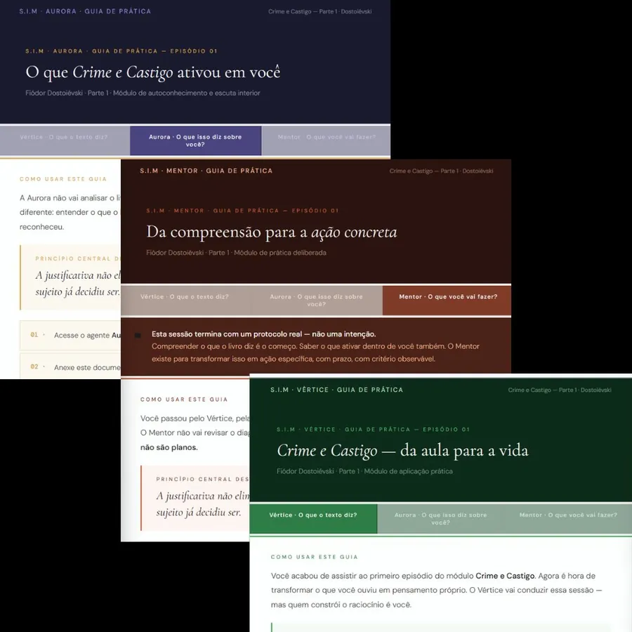
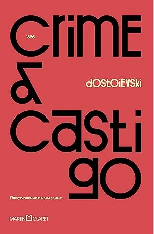
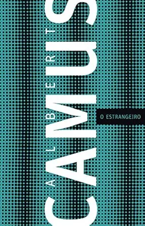

Leitura que transforma
Todo mês um clássico da literatura mundial debatido em profundidade. Você não recebe apenas uma aula. Recebe um sistema completo de materiais para transformar cada livro em desenvolvimento real.
Cada livro do Clube vem com um guia completo dividido em três sessões, uma para cada agente. Você anexa o guia ao agente correspondente e inicia uma sessão guiada sobre o livro. O Vértice confronta suas interpretações. A Aurora mapeia o que ficou em você. O Mentor transforma tudo em ação concreta.
Uma imersão profunda no clássico do mês: contexto histórico, análise dos personagens, princípios centrais e o que aquele livro ainda diz sobre nós hoje.
Um documento interativo dividido por partes do livro. A cada seção você registra suas impressões, posições e interpretações. No fechamento, compara quem você era na primeira página com quem chegou na última.
Você anexa este guia ao Vértice e inicia uma sessão guiada. O Vértice confronta suas interpretações, questiona o óbvio e aprofunda cada ideia até ela virar repertório real.
Depois do Vértice, a Aurora mapeia o impacto emocional da leitura: o que o livro ativou em você, que padrões você reconheceu, o que ficou difícil de admitir.
O fechamento da jornada. O Mentor transforma tudo que você descobriu em um protocolo concreto de ação com metas, prazos e critérios de avaliação. Nenhum plano vago é aceito.

Livros do clube

Crime e Castigo
Fiódor Dostoiévski
Na Colônia Penal
Franz Kafka
Quincas Borba
Machado de Assis
O Retrato de Dorian Gray
Oscar Wilde
O Apanhador no Campo de Centeio
J.D. Salinger
A Cabeça do Santo
Socorro Acioli

O Estrangeiro
Albert Camus

Capitães da Areia
Jorge Amado
Laranja Mecânica
Anthony Burgess
Com o Diário de Leitura você poderá registrar suas impressões antes de ler, durante a leitura e como elas ficaram depois de terminar o livro. O documento é editável e salvável. Você pode abrir no notebook ou no celular.
Você tem aqui um registro real da sua leitura: do que você pensava antes até o que chegou depois.
Esse diário é seu. Guarde. Releia daqui a um ano. O que mudou vai dizer mais sobre você do que qualquer análise externa.
Cada livro comentado no Clube terá um Diário de Leitura personalizado, desenvolvido de acordo com o tamanho da história e os personagens envolvidos.
 ✓ GARANTIA DE 7 DIAS
✓ GARANTIA DE 7 DIAS